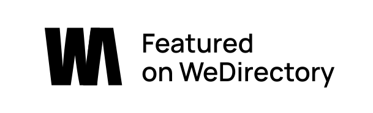
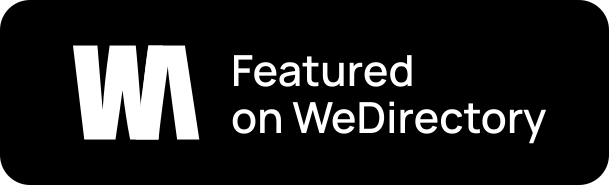
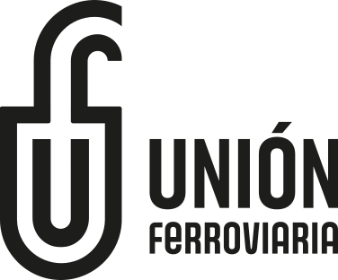
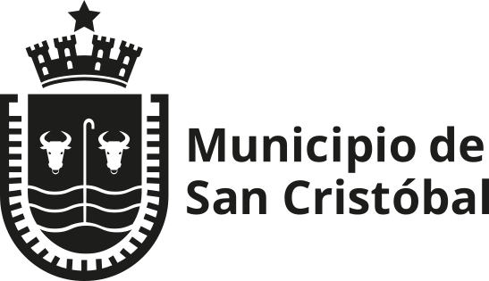
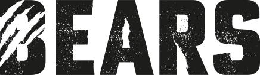
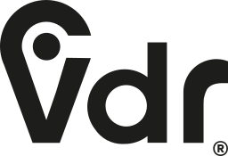

Trenes Argentinos Cargas
La logística federal requiere un sistema visual que traduzca el rendimiento y la escala de la operación.


Cruz Estudio — diseño y estrategia visual. Construimos identidades sólidas: branding, sistemas visuales y experiencias digitales para marcas que buscan conectar, competir y perdurar.
Somos un equipo especializado en diseño estratégico. Trabajamos a la par de tu empresa para traducir sus objetivos comerciales en identidades sólidas. Nos apasiona acompañar a marcas en crecimiento, aportando el rigor técnico necesario para transformar su calidad real en calidad percibida, aportando un valor tangible al día a día de tu negocio.




La logística federal requiere un sistema visual que traduzca el rendimiento y la escala de la operación.

Revitalización del escudo y del sistema de marca para una identidad institucional cercana.

Identidad de alto rendimiento gráfico para una plataforma que ordena y potencia la gestión.
Identidad sólida para maquinaria vial: precisión industrial traducida a sistema visual.
Definimos los atributos que debe expresar la marca antes de diseñarla para asegurar su máximo rendimiento institucional.
Planes integrales de comunicación medibles y ajustables para conectar con audiencias específicas de manera real.
Cobertura institucional y spots de alto impacto que combinan de forma precisa ritmo narrativo, estética y funcionalidad.
Diseñamos interfaces intuitivas centradas en el usuario y desarrollamos sitios web estables para maximizar la conversión digital.
No hacemos estética vacía. Muchos rediseños se quedan cortos porque solo maquillan la superficie. Nosotros vamos un paso más allá: construimos identidades preparadas para escalar, competir y perdurar. Entendemos la marca no como un simple dibujo, sino como la firma institucional que avala la calidad de tus servicios. ¿El resultado? Una identidad inconfundible que deja de pedir atención y empieza a inspirar respeto.
Respuestas directas para decisiones estratégicas. Todo lo que necesitás saber sobre nuestra metodología, tiempos de trabajo y cómo empezar a potenciar el rendimiento visual de tu empresa.
No trabajamos con "paquetes genéricos" ni tarifas estandarizadas, porque no hacemos diseño en serie. Entendemos que la identidad de tu empresa no es un gasto estético, sino un activo comercial. El valor de la inversión depende exclusivamente de la escala del desafío, la complejidad del sistema visual y los entregables que tu negocio realmente necesite. Una vez que tenemos nuestra primera sesión de diagnóstico y entendemos tu realidad, armamos una propuesta y un presupuesto a la medida exacta de tu proyecto.
En Cruz Estudio no diseñamos "dibujos lindos" ni logotipos aislados. Creemos que una marca gráfica es la firma institucional de tu empresa y debe funcionar dentro de un ecosistema sólido. Por eso, no entregamos un logo suelto; desarrollamos sistemas visuales completos de alto rendimiento (que incluyen estrategia, normativas tipográficas, paletas y aplicaciones) para que tu marca se exprese con coherencia en cada punto de contacto.
Absolutamente no. Cuando un negocio ya está consolidado, el buen diseño no te disfraza de alguien que no sos; revela tu mejor versión. Hacemos un trabajo profundo de auditoría para conservar la esencia y los activos que ya funcionan en tu marca, y optimizamos lo que se quedó en el tiempo. El objetivo es que tu imagen alcance el mismo nivel de calidad y profesionalismo que ya tienen tus servicios.
El rigor técnico requiere método. Un proyecto integral de branding estratégico suele llevar entre 6 y 10 semanas, dependiendo de la magnitud de la empresa. Nuestro proceso no es improvisado: lo dividimos en etapas claras que van desde el Diagnóstico Institucional (Fase 1), pasando por el Desarrollo del sistema visual y verbal (Fase 2), hasta la Sistematización y el Manual de Normas (Fase 3).
Uno de nuestros propósitos principales es la democratización del diseño de alto rendimiento. Esto significa que llevamos el rigor metodológico que usan las grandes marcas internacionales a PyMEs y empresas en pleno crecimiento. Trabajamos tanto con entidades de alcance nacional como con negocios B2B locales que buscan dejar de competir por precio para empezar a comandar respeto en su sector.
Todo empieza con una charla. No esperamos que tengas todas las respuestas técnicas; ese es nuestro trabajo. Te invitamos a agendar una sesión de diagnóstico inicial (sin costo). En esos 15 o 20 minutos vamos a escuchar los dolores comerciales de tu empresa, evaluar cómo se está comunicando hoy y contarte con total honestidad si podemos ayudarlos y cuál sería la hoja de ruta ideal.
// DISEÑO ESTRATÉGICO — BUENOS AIRES